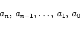
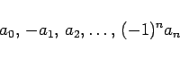
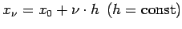

Inhalt Index DeskTop Bronstein

 Numerische Mathematik Numerische Lösung nichtlinearer Gleichungen Lösung von Polynomgleichungen Lage der Nullstellen
Numerische Mathematik Numerische Lösung nichtlinearer Gleichungen Lösung von Polynomgleichungen Lage der Nullstellen


Mit der Kartesischen Zeichenregel kann man einen ersten Hinweis darauf bekommen, ob die Polynomgleichung (19.11) reelle Nullstellen hat. Es gilt:
|  | (19.19a) |
oder um eine gerade Anzahl kleiner.
|  | (19.19b) |
oder um eine gerade Anzahl kleiner.
| Beispiel |
|
p5(x) = x5-6x4+10x3+13x2-15x-16 hat 1 oder 3 positive Wurzeln und 0 oder 2 negative Wurzeln. |
Mit der STURMschen Kette kann man genaue Auskunft über die Anzahl der reellen Nullstellen zwischen zwei Stellen x = a und x = b bekommen.
Einen Überblick über den Verlauf der Kurve y = pn(x) und damit auch über die Lage ihrer Nullstellen verschafft man sich dadurch, daß man mit Hilfe des HORNER-Schemas für gleichabständige Argumentwerte  die Funktionswerte ermittelt. Hat man zwei Stellen x = a und x = b gefunden, an denen pn(x) entgegengesetzte Vorzeichen hat, dann liegt zwischen ihnen mindestens eine reelle Nullstelle.